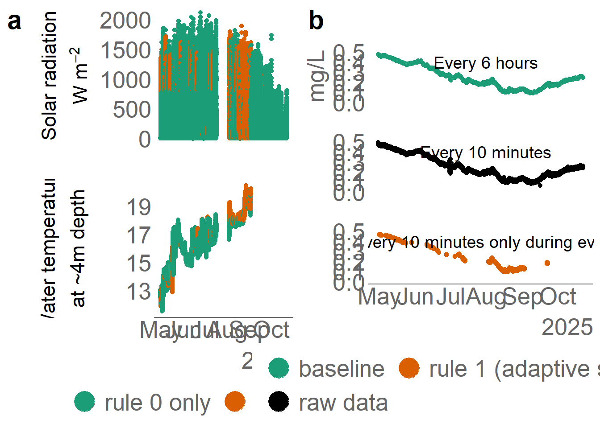
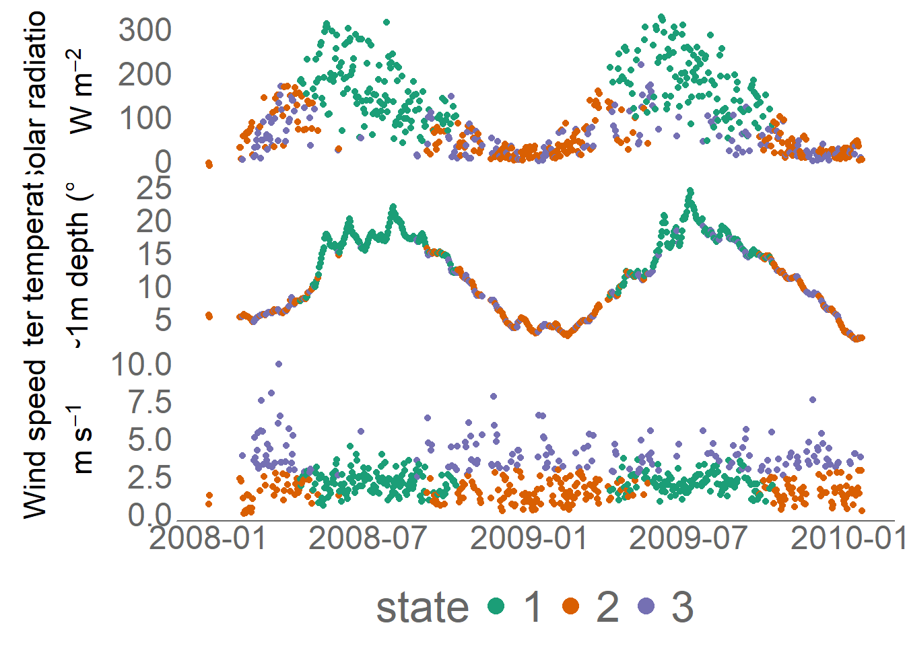
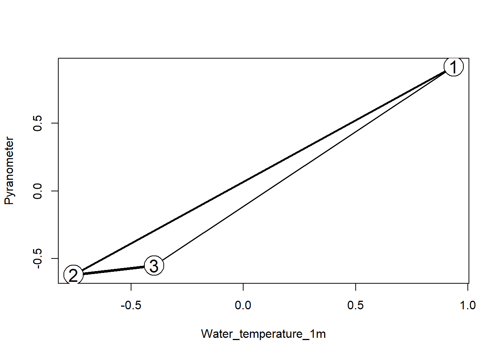
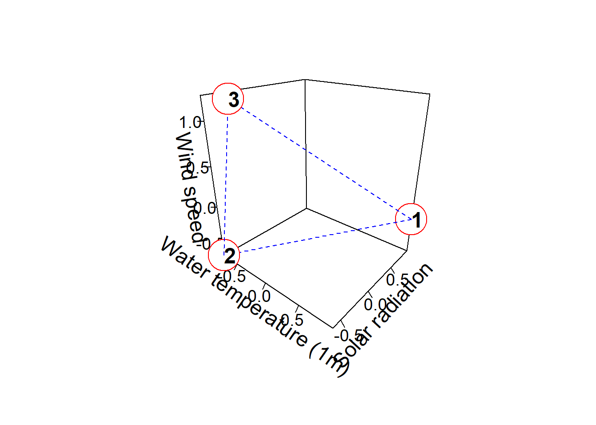
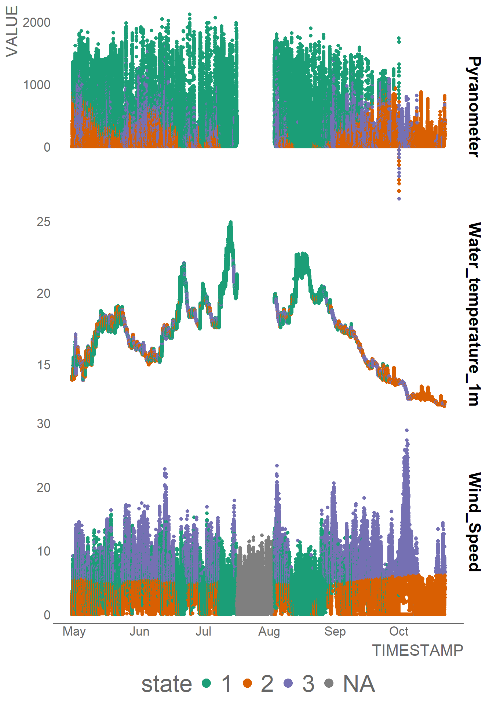
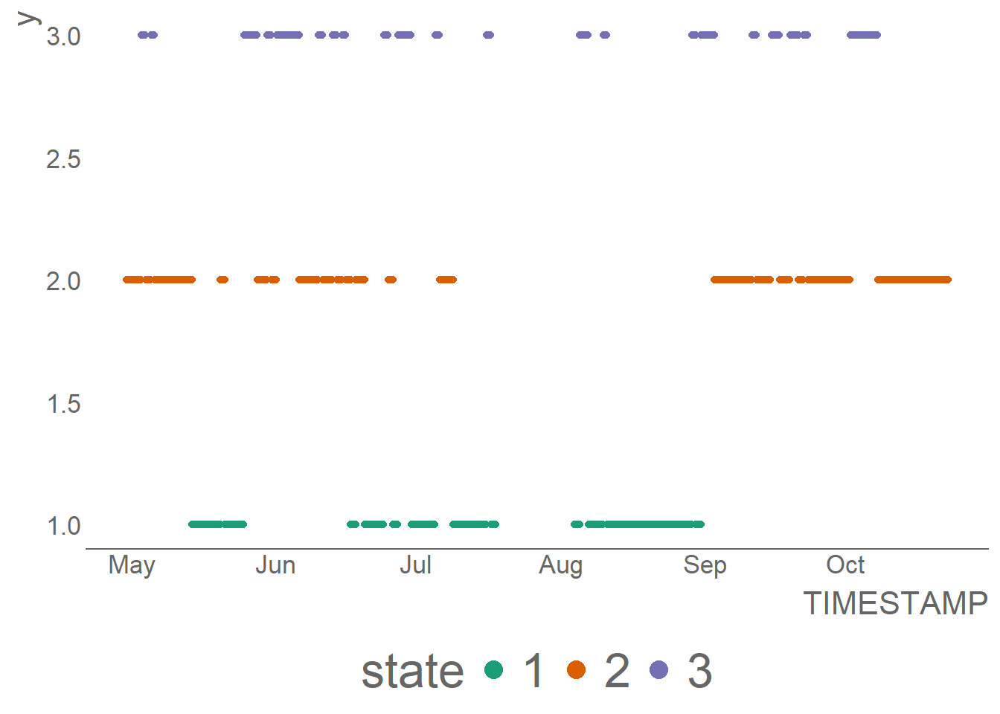
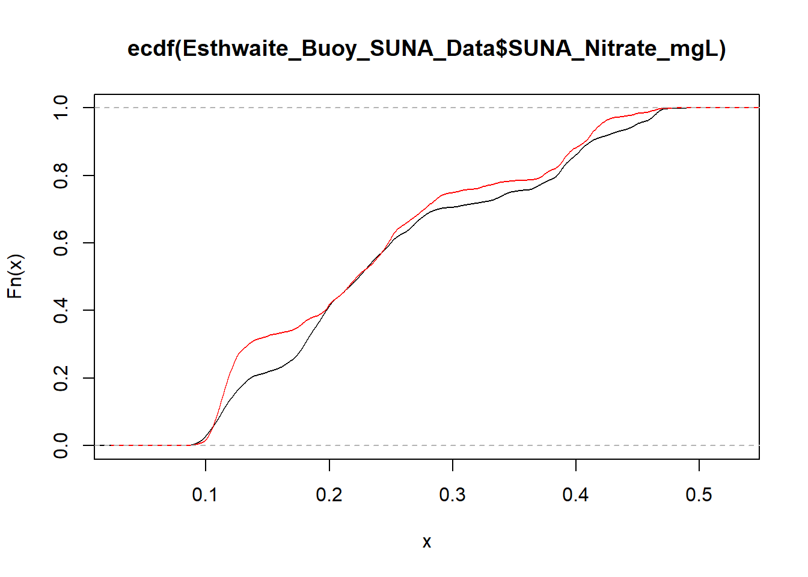
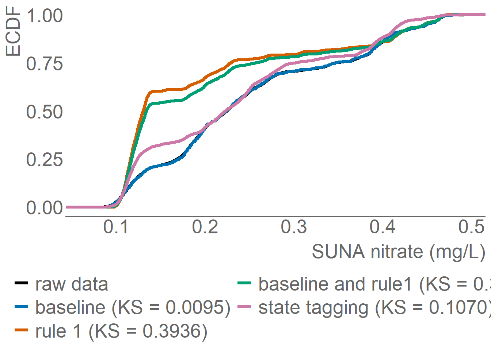

Lake water quality example: Esthwaite Water, UK
What is adatpive sampling?
Adpative sampling is the opposite of sampling with a fixed design. A majority of previous adaptive sampling is applied spatially, where collected data determined the spatial location of the samples in the next sampling round. Here we focus on temporal adatpive sampling, where sampling frequencies effectively changes based on measured data or other information.
The multi-rule approach
Adaptive sampling means sampling that goes beyonds fixed designs of sampmling at regular intervals. In practice, changing sampling frequencies all the time can lead to a variety of issues. Therefore, using a combination of multiple rules, each sampling at regular intervals and activated by different criteria, to achieve adaptive sampling is more flexible and is preferred.
| Multi-rule adaptive sampling (this R package) | Dynamic frquency adaptive sampling |
|---|---|
| Each rule samples at regular intervals, but are triggered adaptively. | Sampling frequencies can change abruptly and unexpeectedly. |
| The combination of rules make the approach highly flexible. | More challenging to analyze data. |
| You can analyze data from each rule separately. | |
| Baseline data for trend monitoring will not be disrupted. | |
| Ideal solution to combine compliance monitoring with taking opportunisitc measurements. |
Example data: Esthwaite lake monitoring data and SUNA nitrate sensor
For demonstration, we use field trial data from in-lake physico-chemical sensors (water temperature at 12 depths, and Ponsel temperature and conductivity), over-lake weather sensors (air temperature, wind speed, wind direction, solar radiation, relative humidity) sonde and a SUNA optical nitrate sensor on an automatic buoy located on Esthwaite water in Lake District, England collected between 29th April to 22nd October 2025. Optical nitrate data was collected every 10 minutes, while the other determinants are measured at every 2 minutes. While no specific events are expected in this lake, we use this dataset to demonstrate the various techniques for adaptive sampling.
Evaluation: some metrics
Following Elfferich et al. (2024), we will report the median and range captured by the downsampled time series, which is applicable to adaptively sampled time series in retrospective experiments. is the orginal time series, while is the sub-sampled time series.
Percentage of range captured
Percentage change of median
Loading libraries
Loading data
The following data has been loaded in the adaptNP R package.
# filepath <- 'temp/Esthwaite_Buoy_Data_May_to_Oct_2025.xlsx'
# excel_sheets(filepath)
# # print header
# print( read_excel(filepath, sheet = "Esthwaite_Buoy_HiRes", n_max = 0))
# Esthwaite_Buoy_HiRes <- read_excel(filepath, sheet = "Esthwaite_Buoy_HiRes", skip=1) # every 2 minutes
# # print header
# print( read_excel(filepath, sheet = "Esthwaite_Buoy_SUNA_Data", n_max = 0))
# Esthwaite_Buoy_SUNA_Data <- read_excel(filepath, sheet = "Esthwaite_Buoy_SUNA_Data", skip=1) # every 10 minutesExample 1: threshold rules
We will illustrate the method by using a simple rule:
criteria <-"(Temp4m > 18) | (SPFD >800)"
The adapt-NP R package make it very easy to do so.
- The
flag_eventfunction returns whether or not the criterion is met (i.e. a event). - The
extract_event_periodsfunction extract periods (i.e. dictionary of start and end times) where the event occurs. Note you can specify to extract only events that are longer than a particular duration (specifically, number of records).
criteria <-"(Temp4m > 18) | (SPFD >800)"
# flag event (True or false)
Esthwaite_Buoy_HiRes <- flag_event(Esthwaite_Buoy_HiRes,criteria)
# extract event periods (i.e. start and end)
periods <- extract_event_periods(
Esthwaite_Buoy_HiRes %>%
rename(timestamp=TIMESTAMP,flag=event_flag) |> tidyr::drop_na(flag),
min_length=50)
# stats
periods |>
mutate(
duration =
lubridate::parse_date_time(end, orders = c("ymd HMS", "ymd")) -
lubridate::parse_date_time(start, orders = c("ymd HMS", "ymd"))
) |>
summarise(mean = mean(duration, na.rm = TRUE)) mean
1 5.137815 hoursWe can show the periods during which the rule is activated in the Temp4m and SPFD data.
Esthwaite_Buoy_HiRes$mask <- Reduce(`|`, lapply(intervals, function(int) Esthwaite_Buoy_HiRes$TIMESTAMP %within% int))
pp1 = Esthwaite_Buoy_HiRes |> mutate(
Rule = if_else(mask == TRUE, "rule 1 active", "rule 0 only")
) |>
select(TIMESTAMP,Rule,Temp4m,SPFD) |>
filter(SPFD > -1.0) |>
tidyr::pivot_longer(-c(TIMESTAMP, Rule), names_to = "fieldname", values_to = "value") |>
ggplot2::ggplot() +
geom_point(aes(x = TIMESTAMP, y=value, colour = factor(Rule))) +
facet_wrap(~fieldname, ncol = 1, scales = "free_y", axes = "all_y",
labeller = as_labeller(
c(
SPFD = "atop('Solar radiation', W~m^{-2})",
Temp4m = "atop('Water temperature', 'at ~4m depth')"
),
label_parsed
),
strip.position = "left"
) +
scale_color_manual(
name = "", # legend title
values = c(#"raw data" = "#000000",
"rule 0 only" = "#1b9e77",
"rule 1 active" = "#d95f02")
) +
# geom_text(data = anno, aes(x = xtext, y = ytext, label = text), size=5) +
theme_gov() +
# geom_rect(data = periods |> mutate(start=as.Date(start), end=as.Date(end)),
# aes(xmin = start, xmax = end, ymin = -Inf, ymax = Inf),
# fill = "lightpink", alpha= 0.3)+
theme(legend.position='bottom',
panel.spacing = unit(2, "lines"),
text=element_text(size=20), #change font size of all text
# axis.line = element_line(linewidth = 3, colour = "grey20"),
strip.background = element_blank(),
strip.placement = "outside",
# strip.text = element_text(size = 20), # <- add this explicitly
#strip.text.y = element_blank(),
axis.text=element_text(size=20), #change font size of axis text
axis.title=element_text(size=20), #change font size of axis titles
plot.title=element_text(size=16), #change font size of plot title
legend.text=element_text(size=20), #change font size of legend text
legend.title=element_text(size=20))+ #change font size of legend title
#ggtitle('2025 SUNA nitrate sensor field trial, Esthwaitewater, UK \n') +
labs(x='2025',y='')+
guides(colour = guide_legend(override.aes = list(size=8)))
# pp1After extracting the event periods, the following code snippets uses it to subset the SUNA nitrate dataset.
# rule 0: every 6h
baseline0 <- Esthwaite_Buoy_SUNA_Data |>
select(TIMESTAMP, SUNA_Nitrate_mgL) |>
mutate(hour = lubridate::hour(TIMESTAMP),
minute = lubridate::minute(TIMESTAMP)) |>
filter(minute==0, hour %in% c(3,9,15,21))
mask_baseline <- Esthwaite_Buoy_SUNA_Data |>
select(TIMESTAMP, SUNA_Nitrate_mgL) |>
mutate(hour = lubridate::hour(TIMESTAMP),
minute = lubridate::minute(TIMESTAMP)) |>
transmute(sampled = minute==0 & hour %in% c(3,9,15,21)) |>
pull(sampled)
baseline <- Esthwaite_Buoy_SUNA_Data[mask_baseline, ] |>
select(TIMESTAMP, SUNA_Nitrate_mgL)
all.equal(baseline0 |> select(-hour, -minute), baseline)[1] TRUENow, we plot the results.
# now plot: (1) all SUNA, (2) baseline SUNA, (3) rule 1 SUNA
combined_SUNA <- Esthwaite_Buoy_SUNA_Data |> select(TIMESTAMP, SUNA_Nitrate_mgL) |>
left_join(rule1 |> select(TIMESTAMP, SUNA_Nitrate_mgL) |> rename(rule1 = SUNA_Nitrate_mgL), by='TIMESTAMP') |>
left_join(baseline |> select(TIMESTAMP, SUNA_Nitrate_mgL) |> rename(baseline = SUNA_Nitrate_mgL), by='TIMESTAMP')
anno <- data.frame(xtext = c('2025-07-31', '2025-07-31', '2025-07-31'),
ytext = c(0.4,0.4,0.4),
Rule = c("raw data", "baseline" ,"rule 1 (adaptive sampling)" ),
text = c("Every 10 minutes", "Every 6 hours", "Every 10 minutes only during event")) |>
mutate(xtext = as.Date(xtext))
pp2 <- combined_SUNA |> #select(-`baseline_and_rule1`) |>
rename( `raw data` = SUNA_Nitrate_mgL,
`baseline` = baseline,
`rule 1 (adaptive sampling)` = rule1,) |>
# filter(TIMESTAMP <'2025-08-15') |>
tidyr::pivot_longer(!TIMESTAMP, names_to = "Rule", values_to = "value") |>
ggplot2::ggplot() +
geom_point(aes(x = TIMESTAMP, y=value, colour = factor(Rule))) +
facet_grid(rows = vars(Rule)) +
# scale_fill_manual(values = c("red", "blue", "green")) +
scale_color_manual(
name = "", # legend title
values = c("raw data" = "#000000",
"baseline" = "#1b9e77",
"rule 1 (adaptive sampling)" = "#d95f02")
) +
geom_text(data = anno, aes(x = xtext, y = ytext, label = text), size=5) +
theme_gov() +
# geom_rect(data = periods |> mutate(start=as.Date(start), end=as.Date(end)),
# aes(xmin = start, xmax = end, ymin = -Inf, ymax = Inf),
# fill = "lightpink", alpha= 0.3)+
theme(legend.position='bottom',
panel.spacing = unit(2, "lines"),
text=element_text(size=20), #change font size of all text
# axis.line = element_line(linewidth = 3, colour = "grey20"),
strip.background = element_blank(),
strip.text.y = element_blank(),
axis.text=element_text(size=20), #change font size of axis text
axis.title=element_text(size=20), #change font size of axis titles
plot.title=element_text(size=16), #change font size of plot title
legend.text=element_text(size=20), #change font size of legend text
legend.title=element_text(size=20))+ #change font size of legend title
ggtitle('\n')+
#ggtitle('2025 SUNA nitrate sensor field trial, Esthwaitewater, UK \n') +
labs(x='2025',y='mg/L')+ ylim(0,0.5) +
guides(colour = guide_legend(override.aes = list(size=8), ncol=2)) # change legend point size
# pp2
# combine plots
plot_grid(pp1,pp2, labels = "auto", label_size = 22)
# plot periods (hours flagged per day) as rectangles: y axis (date), x axis (hours)
periods |> mutate(duration = interval(start,end)%/%minutes(1)) start end duration
1 2025-04-30 09:34:00 2025-04-30 15:18:00 344
2 2025-05-01 08:30:00 2025-05-01 12:26:00 236
3 2025-05-01 12:44:00 2025-05-01 16:02:00 198
4 2025-05-02 09:24:00 2025-05-02 11:08:00 104
5 2025-05-02 11:24:00 2025-05-02 13:30:00 126
6 2025-05-02 14:34:00 2025-05-02 16:14:00 100
7 2025-05-06 08:20:00 2025-05-06 10:58:00 158
8 2025-05-07 08:14:00 2025-05-07 11:06:00 172
9 2025-05-07 12:34:00 2025-05-07 14:16:00 102
10 2025-05-09 08:28:00 2025-05-09 14:26:00 358
11 2025-05-09 14:34:00 2025-05-09 16:20:00 106
12 2025-05-10 08:10:00 2025-05-10 14:28:00 378
13 2025-05-13 08:02:00 2025-05-13 16:28:00 506
14 2025-05-14 08:02:00 2025-05-14 16:06:00 484
15 2025-05-15 07:48:00 2025-05-15 16:28:00 520
16 2025-05-16 07:56:00 2025-05-16 16:32:00 516
17 2025-05-17 07:56:00 2025-05-17 14:28:00 392
18 2025-05-17 14:32:00 2025-05-17 16:32:00 120
19 2025-05-18 08:32:00 2025-05-18 12:28:00 236
20 2025-05-20 07:54:00 2025-05-20 11:40:00 226
21 2025-05-21 08:12:00 2025-05-21 13:24:00 312
22 2025-05-22 13:40:00 2025-05-22 15:20:00 100
23 2025-05-23 07:46:00 2025-05-23 09:26:00 100
24 2025-05-28 12:10:00 2025-05-28 15:16:00 186
25 2025-06-10 13:20:00 2025-06-10 16:32:00 192
26 2025-06-11 08:06:00 2025-06-11 10:14:00 128
27 2025-06-11 13:58:00 2025-06-11 16:36:00 158
28 2025-06-13 12:54:00 2025-06-13 15:20:00 146
29 2025-06-16 08:00:00 2025-06-16 13:12:00 312
30 2025-06-19 07:54:00 2025-06-19 16:48:00 534
31 2025-06-20 14:10:00 2025-06-20 16:32:00 142
32 2025-06-27 07:56:00 2025-06-27 09:38:00 102
33 2025-07-04 15:36:00 2025-07-04 18:42:00 186
34 2025-07-07 10:20:00 2025-07-07 12:52:00 152
35 2025-07-08 08:24:00 2025-07-08 10:46:00 142
36 2025-07-08 11:52:00 2025-07-08 14:26:00 154
37 2025-07-08 14:32:00 2025-07-08 16:50:00 138
38 2025-07-11 08:04:00 2025-07-11 16:48:00 524
39 2025-07-12 08:02:00 2025-07-12 16:44:00 522
40 2025-07-13 08:14:00 2025-07-13 10:56:00 162
41 2025-07-13 11:02:00 2025-07-13 12:50:00 108
42 2025-08-02 11:28:00 2025-08-02 13:16:00 108
43 2025-08-03 07:12:00 2025-08-03 12:34:00 322
44 2025-08-03 14:40:00 2025-08-03 16:38:00 118
45 2025-08-03 20:32:00 2025-08-03 22:30:00 118
46 2025-08-03 22:42:00 2025-08-04 01:46:00 184
47 2025-08-04 04:06:00 2025-08-05 11:22:00 1876
48 2025-08-05 14:24:00 2025-08-05 18:18:00 234
49 2025-08-08 04:22:00 2025-08-08 07:42:00 200
50 2025-08-08 11:54:00 2025-08-08 14:00:00 126
51 2025-08-08 14:06:00 2025-08-08 22:08:00 482
52 2025-08-09 00:16:00 2025-08-09 03:56:00 220
53 2025-08-09 13:18:00 2025-08-09 15:24:00 126
54 2025-08-10 20:42:00 2025-08-10 23:34:00 172
55 2025-08-10 23:40:00 2025-08-11 02:16:00 156
56 2025-08-12 15:52:00 2025-08-12 18:26:00 154
57 2025-08-13 08:54:00 2025-08-13 13:42:00 288
58 2025-08-14 12:44:00 2025-08-14 15:46:00 182
59 2025-08-14 21:26:00 2025-08-15 154
60 2025-08-15 03:00:00 2025-08-15 04:50:00 110
61 2025-08-15 08:44:00 2025-08-15 10:46:00 122
62 2025-08-15 21:08:00 2025-08-16 02:10:00 302
63 2025-08-16 08:02:00 2025-08-16 11:28:00 206
64 2025-08-16 12:42:00 2025-08-16 18:26:00 344
65 2025-08-17 06:20:00 2025-08-17 16:14:00 594
66 2025-08-17 17:48:00 2025-08-17 19:54:00 126
67 2025-08-18 05:52:00 2025-08-18 16:16:00 624
68 2025-08-18 21:02:00 2025-08-19 00:06:00 184
69 2025-08-19 01:32:00 2025-08-19 07:40:00 368
70 2025-08-19 07:44:00 2025-08-19 10:38:00 174
71 2025-08-19 12:52:00 2025-08-19 17:00:00 248
72 2025-08-19 19:46:00 2025-08-19 23:50:00 244
73 2025-08-19 23:56:00 2025-08-20 10:14:00 618
74 2025-08-20 10:20:00 2025-08-20 14:26:00 246
75 2025-08-20 16:04:00 2025-08-21 18:08:00 1564
76 2025-08-21 18:12:00 2025-08-21 20:58:00 166
77 2025-08-21 21:02:00 2025-08-22 16:10:00 1148
78 2025-08-22 16:14:00 2025-08-22 18:00:00 106
79 2025-08-22 19:32:00 2025-08-22 21:20:00 108
80 2025-08-22 21:30:00 2025-08-22 23:38:00 128
81 2025-08-22 23:42:00 2025-08-23 04:16:00 274
82 2025-08-23 04:20:00 2025-08-23 06:00:00 100
83 2025-08-23 07:32:00 2025-08-23 09:42:00 130
84 2025-08-23 10:56:00 2025-08-23 13:28:00 152
85 2025-08-23 13:46:00 2025-08-23 19:42:00 356
86 2025-08-23 19:46:00 2025-08-24 00:20:00 274
87 2025-08-24 03:02:00 2025-08-24 05:02:00 120
88 2025-08-24 05:26:00 2025-08-24 09:24:00 238
89 2025-08-24 09:28:00 2025-08-24 11:38:00 130
90 2025-08-24 11:52:00 2025-08-24 15:38:00 226
91 2025-08-24 16:04:00 2025-08-24 19:18:00 194
92 2025-08-24 19:22:00 2025-08-24 21:42:00 140
93 2025-08-24 21:46:00 2025-08-25 01:28:00 222
94 2025-08-25 02:22:00 2025-08-25 07:02:00 280
95 2025-08-25 08:20:00 2025-08-25 14:52:00 392
96 2025-08-25 14:56:00 2025-08-26 23:34:00 1958
97 2025-08-26 23:38:00 2025-08-28 02:24:00 1606
98 2025-08-28 03:42:00 2025-08-29 02:32:00 1370
99 2025-08-29 02:36:00 2025-08-29 07:10:00 274
100 2025-08-29 09:32:00 2025-08-29 19:32:00 600
101 2025-08-29 21:04:00 2025-08-30 01:20:00 256
102 2025-08-30 03:04:00 2025-08-30 06:56:00 232
103 2025-08-30 07:00:00 2025-08-30 17:30:00 630
104 2025-08-30 17:34:00 2025-08-30 20:18:00 164
105 2025-08-30 20:46:00 2025-08-30 22:48:00 122
106 2025-08-30 22:52:00 2025-08-31 01:54:00 182
107 2025-08-31 01:58:00 2025-08-31 03:58:00 120
108 2025-08-31 05:22:00 2025-08-31 12:18:00 416
109 2025-08-31 13:16:00 2025-08-31 15:52:00 156
110 2025-08-31 15:56:00 2025-08-31 18:00:00 124
111 2025-08-31 18:04:00 2025-08-31 20:04:00 120
112 2025-08-31 21:04:00 2025-09-01 06:24:00 560
113 2025-09-01 07:36:00 2025-09-01 12:36:00 300
114 2025-09-01 14:06:00 2025-09-01 18:04:00 238
115 2025-09-01 19:08:00 2025-09-02 02:56:00 468
116 2025-09-02 05:12:00 2025-09-02 06:50:00 98
117 2025-09-02 07:38:00 2025-09-02 13:58:00 380
118 2025-09-21 10:18:00 2025-09-21 12:50:00 152
119 2025-09-22 11:06:00 2025-09-22 12:44:00 98Example 2: data-driven rules (state tagging)
# load extra libraries
# library(devtools)
# load_all() # load adaptNP
library(flexclust) # for S4 plot/predict(clusters)In the adaptNP R package, find_clusters applies the state tagging method.
## train state tagging with old data
# Esthwaite_Buoy_OLD <- read.csv('../temp/ESTH_2008_2009_2010_2011.csv') # data loaded in package
######### plot daily training data cluster results
Esthwaite_Buoy_OLD_daily = Esthwaite_Buoy_OLD |> mutate(across(where(is.numeric), ~ na_if(.x, 99999))) |>
dplyr::mutate(Date_GMT = as.POSIXct(Date_GMT, format= "%d/%m/%Y %H:%M" , tz="GMT") ) |>
group_by(lubridate::date(Date_GMT )) |>
summarise(across(where(is.numeric), mean, na.rm = TRUE)) |>
dplyr::rename(DATE = 'lubridate::date(Date_GMT)')
clusters <- find_clusters(Esthwaite_Buoy_OLD_daily |> select(Water_temperature_1m, Pyranometer, Wind_Speed) )
## write state = clusters to data frame
Esthwaite_Buoy_OLD_daily = Esthwaite_Buoy_OLD_daily |>
select(DATE, Water_temperature_1m, Pyranometer, Wind_Speed) |>
tidyr::drop_na() |>
mutate(state = modeltools::clusters(clusters))
big_text <- theme(
axis.title = element_text(size = 18),
axis.text = element_text(size = 18),
plot.title = element_text(size = 18),
)
## plot
p2010 <- ggplot2::ggplot(Esthwaite_Buoy_OLD_daily |>
pivot_longer(!c(DATE, state), names_to = "FIELDNAME", values_to = "VALUE") |>
mutate(state = as.factor(state))
) +
geom_point(aes(x = DATE, y = VALUE, color = state)) +
facet_grid(rows = vars(FIELDNAME), scales = "free", axes = "all_y",
switch = "y", # moves facet strip to the left
labeller = as_labeller(
c(
Pyranometer = "atop('Solar radiation', W~m^{-2})",
Wind_Speed = "atop('Wind speed', m~s^{-1})",
Water_temperature_1m = "atop('Water temperature', 'at ~1m depth (°C) ')"
),
label_parsed
)) +
theme_gov() + big_text +
scale_colour_brewer(palette = "Dark2") +
guides(color = guide_legend(override.aes = list(size = 4))) +
labs(x = NULL, y = NULL) + # remove axis titles
theme(strip.placement = "outside") # ensures strip sits outside the panel, not over axis
p2010
### 3D plotting of clusters
#| fig-cap: "A visual summary of the three clusters (e.g. cluster 3 represents high wind conditions)"
#| fig-alt: "A visual summary of the three clusters"
# 2D
plot(clusters)
# 3D
# p3dclust <-...
library(plot3D)
make_cluster_plot <- function() {
centers <- clusters@centers
n <- nrow(centers)
x <- centers[,"Water_temperature_1m"]
y <- centers[,"Pyranometer"]
z <- centers[,"Wind_Speed"]
library(plot3D)
centers <- clusters@centers
n <- nrow(centers)
x <- centers[,"Water_temperature_1m"]
y <- centers[,"Pyranometer"]
z <- centers[,"Wind_Speed"]
# back box only, normal color
scatter3D(x, y, z, colvar = NULL, col = "black", pch = 19, cex = 0,
theta = 40, phi = 25,
bty = "b", # back panels/edges only
border = "lightgray",
panel.color = "transparent", # remove panel fill (was white/grey)
ticktype = "detailed",
scale = FALSE,
xlab = "Water temperature (1m)",
ylab = "Solar radiation",
zlab = "Wind speed",
cex.lab = 1.5,
cex.axis = 1.2)
# add front edges manually in light grey to complete the full box
# pad <- 0 # increase slightly if you want the box to extend beyond the data
# box3D(x0 = min(x) - pad, y0 = min(y) - pad, z0 = min(z) - pad,
# x1 = max(x) + pad, y1 = max(y) + pad, z1 = max(z) + pad,
# col = "lightgrey", lwd = 1, add = TRUE,
# facets = FALSE) # edges only, no shaded faces
# dashed lines between centres
pairs <- combn(n, 2)
for (i in seq_len(ncol(pairs))) {
a <- pairs[1, i]; b <- pairs[2, i]
lines3D(x[c(a,b)], y[c(a,b)], z[c(a,b)],
col = "blue", lty = 2, add = TRUE)
}
# open red circles with numbers
points3D(x, y, z, add = TRUE, pch = 21, cex = 5,
col = "red", bg = "white", lwd = 2,
alpha = 1, colkey = FALSE, shade = 0, lighting = FALSE)
text3D(x, y, z, labels = seq_len(n), add = TRUE,
col = "black", font = 2, cex = 1.5)
}
# call it any time:
make_cluster_plot()
make cluster predictions
# not used, apply to hourly data directly
### predict hi-res data
### (1) no aggregation
newdata = Esthwaite_Buoy_HiRes |> rename(Water_temperature_1m=Temp1m,Pyranometer=SPFD,Wind_Speed=WindSpd)
newdata = pred_clusters(clusters, newdata)
# plot hourly state and weather data
ggplot2::ggplot(newdata |> dplyr::select(TIMESTAMP,Water_temperature_1m,Pyranometer,Wind_Speed,state) |>
pivot_longer(!c(TIMESTAMP, state), names_to = "FIELDNAME", values_to = "VALUE") |>
mutate(state = as.factor(state))
) +
geom_point(aes(x=TIMESTAMP,y=VALUE, color=state)) +
facet_grid(rows = vars(FIELDNAME), scales = "free") +
theme_gov() +
scale_colour_discrete(palette = scales::pal_brewer(palette = "Dark2")) +
guides(color = guide_legend(override.aes = list(size = 4)))
newdata |>
group_by(lubridate::date(TIMESTAMP )) |>
summarise(across(where(is.numeric), mean, na.rm = TRUE)) |>
dplyr::rename(DATE = 'lubridate::date(TIMESTAMP)')# A tibble: 177 × 24
DATE RECORD AirTemp WindDir Wind_Speed CMP6 Pyranometer PonselTemp
<date> <dbl> <dbl> <dbl> <dbl> <dbl> <dbl> <dbl>
1 2025-04-29 32.7 11.5 81.0 1.36 0 0.0213 14.5
2 2025-04-30 434. 15.9 153. 2.23 280. 446. 15.5
3 2025-05-01 1154. 14.9 151. 4.95 283. 458. 16.3
4 2025-05-02 898. 12.4 101. 5.02 272. 442. 15.8
5 2025-05-03 655. 11.7 97.0 5.71 241. 380. 15.3
6 2025-05-04 412. 8.58 67.3 6.39 218. 342. 14.9
7 2025-05-05 1132. 9.02 96.9 4.81 233. 374. 14.4
8 2025-05-06 1852. 10.5 124. 2.96 272. 442. 15.0
9 2025-05-07 2572. 11.8 163. 3.27 276. 441. 15.5
10 2025-05-08 3292. 9.01 119. 2.88 166. 268. 15.4
# ℹ 167 more rows
# ℹ 16 more variables: PonselCond <dbl>, Temp_RH <dbl>, RH <dbl>,
# Water_temperature_1m <dbl>, Temp2m <dbl>, Temp3m <dbl>, Temp4m <dbl>,
# Temp5m <dbl>, Temp6m <dbl>, Temp7m <dbl>, Temp8m <dbl>, Temp9m <dbl>,
# Temp10m <dbl>, Temp11m <dbl>, Temp12m <dbl>, state <dbl>
Mode <- function(x) {
ux <- unique(x)
ux[which.max(tabulate(match(x, ux)))]
}
# Find state from previous 24 hour data (option 1: daily mode of states, option 2: do state tagging on daily mean data)
newdataDailyMode = newdata |> dplyr::select(TIMESTAMP,Water_temperature_1m,Pyranometer,Wind_Speed,state) |>
group_by(lubridate::date(TIMESTAMP )) |>
summarise(across(where(is.numeric), Mode)) |>
dplyr::rename(DATE = 'lubridate::date(TIMESTAMP)') |>
dplyr::mutate(state = lag(state))
newdataDailyMode# A tibble: 177 × 5
DATE Water_temperature_1m Pyranometer Wind_Speed state
<date> <dbl> <dbl> <dbl> <int>
1 2025-04-29 14.0 0 0 NA
2 2025-04-30 14.0 0 0 2
3 2025-05-01 14.4 0 0 2
4 2025-05-02 15.0 0 0 2
5 2025-05-03 15.4 0 0 3
6 2025-05-04 15.4 0 8.69 2
7 2025-05-05 14.4 0 2.40 3
8 2025-05-06 14.4 0 0.000836 2
9 2025-05-07 15.0 0 0.745 2
10 2025-05-08 15.2 0 1.73 2
# ℹ 167 more rowsThis is the daily clustering rules we will apply. We apply daily state to high freq data and apply sampling rule by states:
- High Temp/ Low wind: every 10 min, starting from 0000
- Low Temp/ Low wind: every hour
- High wind: every 6 hours (0300,0900,1500,2100)
#| fig-cap: "Daily clustering results."
#| fig-alt: "Daily clustering results."
# Apply daily state to high freq data and apply sampling rule by states:
# 1. High Temp/ Low wind: every 10 min, starting from 0000
# 2. Low Temp/ Low wind: every hour
# 3. High wind: every 6 hours (0300,0900,1500,2100)
# Appply the rule then left join with high freq data
times = newdataDailyMode |> select(DATE,state) |> drop_na() |>
rowwise() |>
mutate(TIMESTAMP = case_when(
state == 1 ~ list(seq(
from = as_datetime(DATE),
to = as_datetime(DATE) + hours(23) + minutes(50),
by = "10 min"
)),
state == 2 ~ list(as_datetime(DATE) + hours(0:23)),
state == 3 ~ list(as_datetime(DATE) + hours(c(3, 9, 15, 21))),
.default = list(as_datetime(DATE) + hours(c(0)))
)
) %>%
unnest(TIMESTAMP) %>%
ungroup()
# plot sampling state
ggplot2::ggplot(times |> mutate(y=state, state=as.factor(state))) +
geom_point(aes(x=TIMESTAMP,y=y, color=state)) +
theme_gov() +
scale_colour_discrete(palette = scales::pal_brewer(palette = "Dark2")) +
guides(color = guide_legend(override.aes = list(size = 4)))
# left join, plot sampled weather data and their state
p2025 <- times |> mutate(y=state, state=as.factor(state)) |>
left_join(newdata |> select(-state), by='TIMESTAMP') |>
select(TIMESTAMP,Water_temperature_1m,Pyranometer,Wind_Speed,state) |>
pivot_longer(!c(TIMESTAMP, state), names_to = "FIELDNAME", values_to = "VALUE") |>
ggplot2::ggplot() +
geom_point(aes(x=TIMESTAMP,y=VALUE, color=state)) +
facet_grid(rows = vars(FIELDNAME), scales = "free", axes = "all_y",
switch = "y", # moves facet strip to the left
labeller = as_labeller(
c(
Pyranometer = "atop('Solar radiation', W~m^{-2})",
Wind_Speed = "atop('Wind speed', m~s^{-1})",
Water_temperature_1m = "atop('Water temperature', 'at ~1m depth (°C) ')"
),
label_parsed
)
) +
theme_gov() + big_text+ # remove axis titles
theme(strip.placement = "outside") + # ensures strip sits outside the panel
scale_colour_discrete(palette = scales::pal_brewer(palette = "Dark2")) +
guides(color = guide_legend(override.aes = list(size = 4))) + xlab('2025') + ylab('')
# left join, SUNA
rule_statetag <-times |> mutate(y=state, state=as.factor(state)) |>
left_join(Esthwaite_Buoy_SUNA_Data , by='TIMESTAMP')
p_nitrate <- rule_statetag |>
ggplot2::ggplot() +
geom_point(aes(x=TIMESTAMP,y=SUNA_Nitrate_mgL , color=state)) +
theme_gov() +
scale_colour_discrete(palette = scales::pal_brewer(palette = "Dark2")) +
guides(color = guide_legend(override.aes = list(size = 4))) + xlab('2025') + ylab('Nitrate (mg/L)') + big_text +
theme(plot.margin = margin(t = 30, r = 5, b = 5, l = 5))
# extract timestamps, need to ensure timestamps are unique and sequential
mask_statetag <- Esthwaite_Buoy_SUNA_Data$TIMESTAMP %in% rule_statetag$TIMESTAMPmetrics
### metrics
combined_SUNA = combined_SUNA |>
mutate(baseline_and_rule1 = rowMeans(cbind(baseline, rule1), na.rm = TRUE)) |>
left_join(rule_statetag |> select(TIMESTAMP, rule_statetag = SUNA_Nitrate_mgL),
by = "TIMESTAMP")
raw_col <- "SUNA_Nitrate_mgL"
# reference stats
ref_median <- median(combined_SUNA[[raw_col]], na.rm = TRUE)
ref_range <- diff(range(combined_SUNA[[raw_col]], na.rm = TRUE))
ref_nrows <- sum(!is.na(combined_SUNA$SUNA_Nitrate_mgL))
metrics <- combined_SUNA |>
select(where(is.numeric), -all_of(raw_col)) |>
pivot_longer(everything(), names_to = "series", values_to = "value") |>
group_by(series) |>
summarise(
non_na_count = sum(!is.na(value)),
median_val = median(value, na.rm = TRUE),
range_val = diff(range(value, na.rm = TRUE)),
.groups = "drop"
) |>
mutate(
pct_median_change = (median_val - ref_median) / ref_median * 100,
pct_range_change = range_val / ref_range * 100
) |>
select(series, median_val, non_na_count, pct_range_change, pct_median_change)
metrics |> pivot_longer(series) |> pivot_wider()# A tibble: 4 × 5
median_val non_na_count pct_range_change pct_median_change series
<dbl> <int> <dbl> <dbl> <chr>
1 0.224 703 89.9 -0.0893 baseline
2 0.134 4268 89.9 -40.3 baseline_and_rule1
3 0.13 3679 87.2 -42.0 rule1
4 0.222 9248 92.6 -0.692 rule_statetag
# metrics <- combined_SUNA |>
# summarise(across(where(is.numeric), ~ median(.x, na.rm = TRUE)))
# ## median changed
# (metrics$rule1 - metrics$SUNA_Nitrate_mgL) / metrics$SUNA_Nitrate_mgL
# c <- combined_SUNA |> mutate(baseline_and_rule1 = rowMeans(cbind(baseline, rule1), na.rm = TRUE)) |>
# summarise(across(where(is.numeric), list(min = min, max = max), na.rm=TRUE))
# (c$baseline_max- c$baseline_min) / (c$SUNA_Nitrate_mgL_max- c$SUNA_Nitrate_mgL_min) *100
# (c$rule1_max- c$rule1_min ) / (c$SUNA_Nitrate_mgL_max- c$SUNA_Nitrate_mgL_min) *100
# (c$baseline_and_rule1_max - c$baseline_and_rule1_min ) / (c$SUNA_Nitrate_mgL_max- c$SUNA_Nitrate_mgL_min) *100
# a = diff(range(Esthwaite_Buoy_SUNA_Data$`SUNA_Nitrate_mgL`, na.rm = TRUE))
# diff(range(rule_statetag$`SUNA_Nitrate_mgL`, na.rm = TRUE)) /a
# b = median(Esthwaite_Buoy_SUNA_Data$`SUNA_Nitrate_mgL`, na.rm = TRUE)
# (median(rule_statetag$`SUNA_Nitrate_mgL`, na.rm = TRUE) -b) /b Kolmogorov-Smirnov Tests and ecdf
A test to show how good a sub-sampled dataset preseves the characteristics of the orignial one is to overlay their empirical cumulative distribution functions (ecdf). In a perfect scenario, the ecdf of the two time series would completely overlap.
Kolmogorov-Smirnov tests returns the KS statistic, , which is the maximum vertical distance between two cumulative distribution functions (CDFs).
The accompanying p-values tests whether the two time series comes from the same statistical distribution. p-value < 0.05 shows strong evidence that the distrutions differ.
Caveat: With very large datasets (common in environmental time series), the KS test becomes extremely sensitive. Even tiny, practically unimportant differences can become statistically significant. In those cases, D is often more informative than the p-value.
Interpretation guide: D < 0.05 Very similar 0.05-0.10 Small difference 0.10-0.20 Moderate difference > 0.20 Large difference
ks.test(Esthwaite_Buoy_SUNA_Data$`SUNA_Nitrate_mgL`, rule_statetag$`SUNA_Nitrate_mgL`)
Asymptotic two-sample Kolmogorov-Smirnov test
data: Esthwaite_Buoy_SUNA_Data$SUNA_Nitrate_mgL and rule_statetag$SUNA_Nitrate_mgL
D = 0.10697, p-value < 2.2e-16
alternative hypothesis: two-sided
ks.test(Esthwaite_Buoy_SUNA_Data$`SUNA_Nitrate_mgL`, baseline$`SUNA_Nitrate_mgL`)$statistic D
0.00950651
ks.test(Esthwaite_Buoy_SUNA_Data$`SUNA_Nitrate_mgL`, rule_statetag$`SUNA_Nitrate_mgL`)$statistic D
0.106967
plot(ecdf(Esthwaite_Buoy_SUNA_Data$`SUNA_Nitrate_mgL`))
lines(ecdf(rule_statetag$`SUNA_Nitrate_mgL`), col = "red")
list(
`raw data` = Esthwaite_Buoy_SUNA_Data$`SUNA_Nitrate_mgL`,
`baseline` = combined_SUNA $`baseline`,
`rule 1` = combined_SUNA $`rule1`,
`baseline and rule1` = combined_SUNA $`baseline_and_rule1`,
`state tagging` = rule_statetag$`SUNA_Nitrate_mgL`
) |>
stack() |>
ggplot2::ggplot(aes(values, colour = ind)) +
stat_ecdf(linewidth = 1.5) +
labs(x = "Value", y = "ECDF", colour = NULL) +
xlab('SUNA nitrate (mg/L)')+
guides(
colour = guide_legend(ncol = 2)
) +
theme_gov() +
theme(
legend.text = element_text(lineheight = 0.9, size=20), # add legend space
legend.position='bottom',
panel.spacing = unit(2, "lines"),
text=element_text(size=20), #change font size of all text
# axis.line = element_line(linewidth = 3, colour = "grey20"),
strip.background = element_blank(),
strip.text.y = element_blank(),
axis.text=element_text(size=20), #change font size of axis text
axis.title=element_text(size=20), #change font size of axis titles
plot.title=element_text(size=16), #change font size of plot title
legend.title=element_text(size=20)
) +
scale_colour_manual(
values = c(
"raw data" = "black",
"baseline" = "#0072B2", # Okabe-Ito blue
"rule 1" = "#D55E00",
"baseline and rule1" = "#009E73",
"state tagging" = "#CC79A7"
),
labels = c(
"raw data" = "raw data",
"baseline" = paste0("baseline"," (KS = ", sprintf('%.4f',ks.test(Esthwaite_Buoy_SUNA_Data$`SUNA_Nitrate_mgL`, combined_SUNA $`baseline`)$statistic) ,")"),
"rule 1" = paste0("rule 1"," (KS = ", sprintf('%.4f',ks.test(Esthwaite_Buoy_SUNA_Data$`SUNA_Nitrate_mgL`, combined_SUNA $`rule1`)$statistic),")"),
"baseline and rule1" = paste0("baseline and rule1"," (KS = ", sprintf('%.4f',ks.test(Esthwaite_Buoy_SUNA_Data$`SUNA_Nitrate_mgL`, combined_SUNA $`baseline_and_rule1`)$statistic ),")"),
"state tagging" = paste0("state tagging"," (KS = ", sprintf('%.4f',ks.test(Esthwaite_Buoy_SUNA_Data$`SUNA_Nitrate_mgL`, rule_statetag$`SUNA_Nitrate_mgL`)$statistic),")")
)
)
#Evaluating extremes performance
masks <- list(
all_data = rep(TRUE,length(mask_baseline)),
mask_baseline = mask_baseline,
mask_rule1 = mask_rule1,
mask_rule0and1 = mask_rule0and1,
mask_statetag = mask_statetag
)
library(purrr)
# show sampling fraction
tibble(
method = names(masks),
sampling_fraction = purrr::map_dbl(masks, mean)
)# A tibble: 5 × 2
method sampling_fraction
<chr> <dbl>
1 all_data 1
2 mask_baseline 0.0278
3 mask_rule1 0.145
4 mask_rule0and1 0.169
5 mask_statetag 0.366
results <- imap_dfr(
masks,
~ extreme_sampling_metrics(
full_values = Esthwaite_Buoy_SUNA_Data$SUNA_Nitrate_mgL,
sampled_mask = .x,
percentile = 0.99,
alpha = 2
) |>
mutate(method = .y)
) |>
rename(P99_recall = extreme_recall,
P99_oversampling_factor = oversampling_factor )
results %>%
pivot_longer(-method, names_to = "variable") %>%
pivot_wider(names_from = method, values_from = value)# A tibble: 6 × 6
variable all_data mask_baseline mask_rule1 mask_rule0and1 mask_statetag
<chr> <dbl> <dbl> <dbl> <dbl> <dbl>
1 percentile 0.99 0.99 0.99 0.99 0.99
2 alpha 2 2 2 2 2
3 P99_recall 1 0.0325 0.110 0.134 0.122
4 P99_oversampli… 1 1.17 0.753 0.794 0.333
5 tail_weighted_… 1 0.0278 0.0935 0.118 0.338
6 percentile_exp… 0.5 0.500 0.344 0.368 0.468